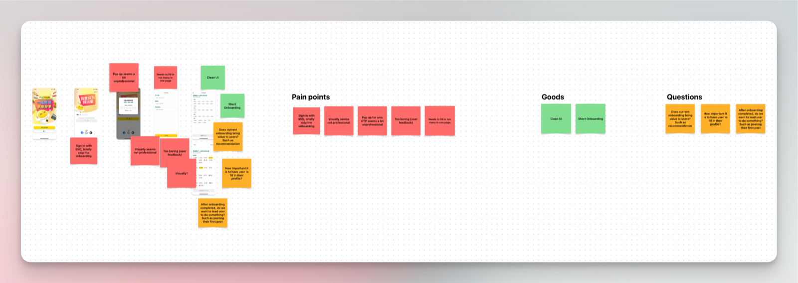
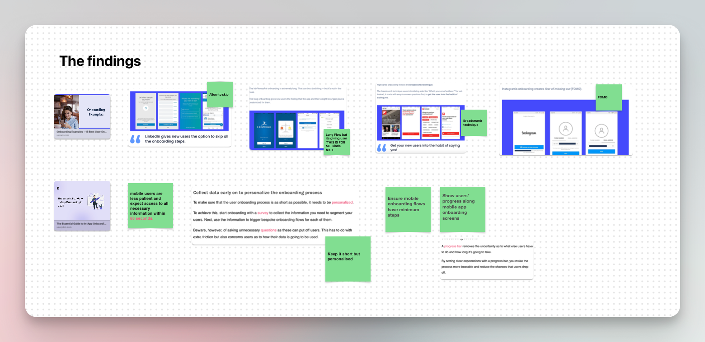
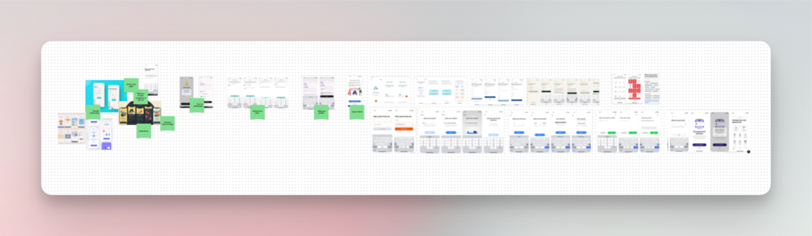
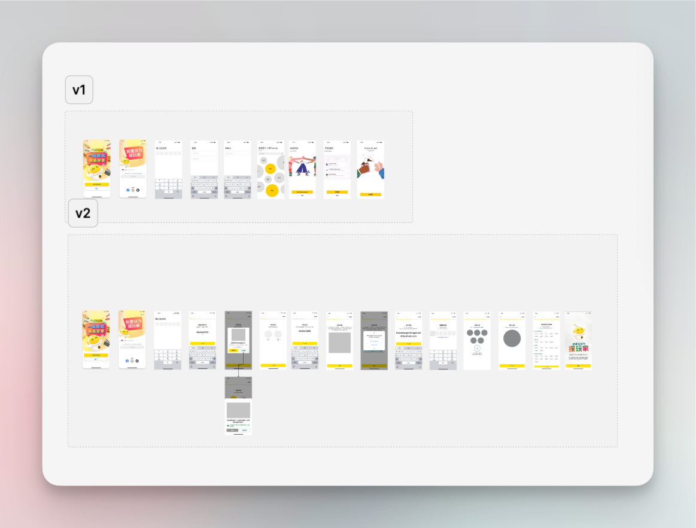
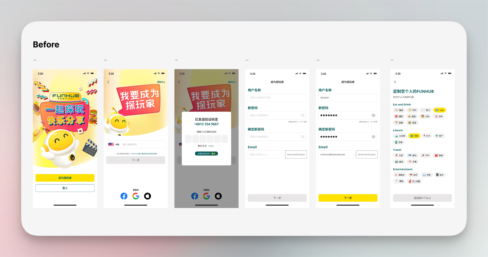
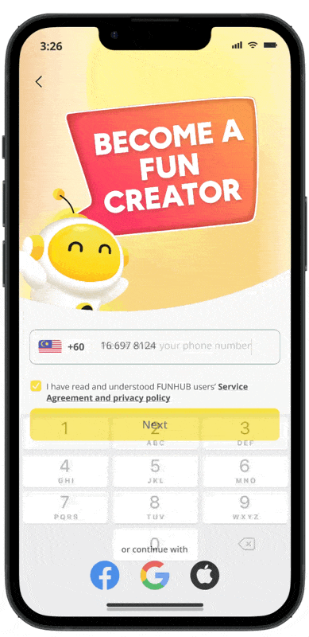
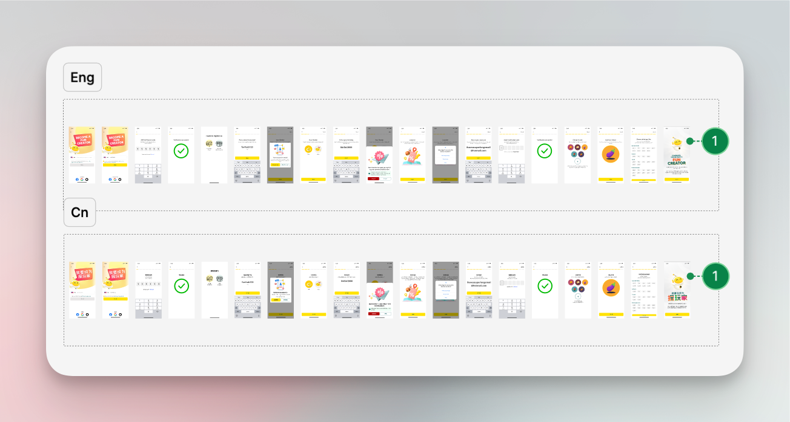
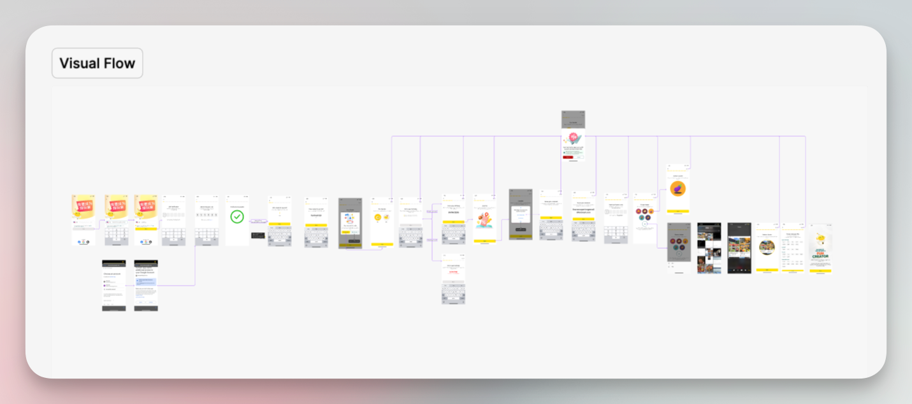

Overview
Funhub is Malaysia’s first Entertainment & Lifestyle Social Circle App, offering users a variety of vouchers and deals for entertainment, food, travel, and other services.
The current flow fails to capture sufficient information, limiting the ability to provide a tailored user experience. This project aims to improve the sign-up flow to enhance data collection for personalisation while minimising drop-off, ensuring users can easily engage with the platform and receive relevant, personalised content.
Problems
Insufficient data for personalised content
The current sign-up process fails to capture enough user information to enable a personalised experience.
Goal
Enhance data collection for personalised experiences
Ensure that necessary user data is gathered to offer personalised content, while minimising the risk of user drop-off during the sign-up process.
The Process
Identify Pros and Cons of Current UI
The current onboarding flow collects minimal data, making the process quick and straightforward. However, since this app is new and lacks data tracking, the team cannot identify completion rates or understand where users might drop off.

With no tracking data available, I focused on gathering qualitative insights and conducting competitive analysis to assess the current onboarding flow.
Competitive Analysis
I examined onboarding flows from similar apps and identified several best practices. These included:
- Offering clear value propositions for why user data is being collected.
- Providing more personalised onboarding experiences based on user preferences.
- Implementing progress indicators and error messaging to guide users.
These insights revealed key areas where our current flow could improve, particularly around data transparency and user engagement.

UI Reference
To inform the redesign of the onboarding flow, I gathered UI references that exemplify effective user experiences. These references served as inspiration for best practices and innovative approaches that could enhance our own design.

These references not only inspired my design decisions but also helped identify opportunities to improve the onboarding flow by ensuring it is user-friendly, engaging, and efficient.
Wireframe
I created a quick wireframe to outline the onboarding flow and then synced with the design team lead and project manager for feedback. After reviewing with them, the final flow and final requirements were confirmed, allowing me to proceed to the mockup phase.

Mockup
Once the wireframes were confirmed, I moved on to the mockup stage to create detailed designs for the improved sign-up flow. This phase emphasises visualising the user experience for personalisation while ensuring a user-friendly interface.
Before

After

Developer Handover
The next step is the developer handover, where I will prepare both English and Chinese versions of the designs. This will include a visual flow to ensure clear communication of the design intent and functionality to the development team.


The Challenges
Lack of Data Tracking for Decision-Making
The absence of robust data tracking systems hinders our ability to make informed design decisions. Without actionable insights, it becomes challenging to identify user needs, measure engagement, and evaluate the effectiveness of the sign-up flow improvements.
Urgency and Limited Manpower
The urgency of the project, combined with a limited team, necessitates a focus on minimising changes to the design process. While aiming for efficiency, we must remain open to iterations that can enhance the user experience, ensuring that we balance speed with quality in our deliverables.
Future Steps
Set Up Data Tracking Mechanisms
Establish a robust data tracking system to ensure continuous monitoring of user interactions, enabling more informed decision-making for future design improvements.
Monitor User Engagement
After implementation, closely track user engagement metrics to identify where drop-offs occur within the new sign-up flow. This data will be crucial for understanding user behaviour and refining the experience.